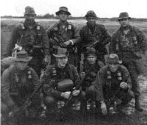
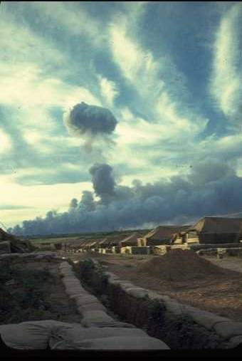
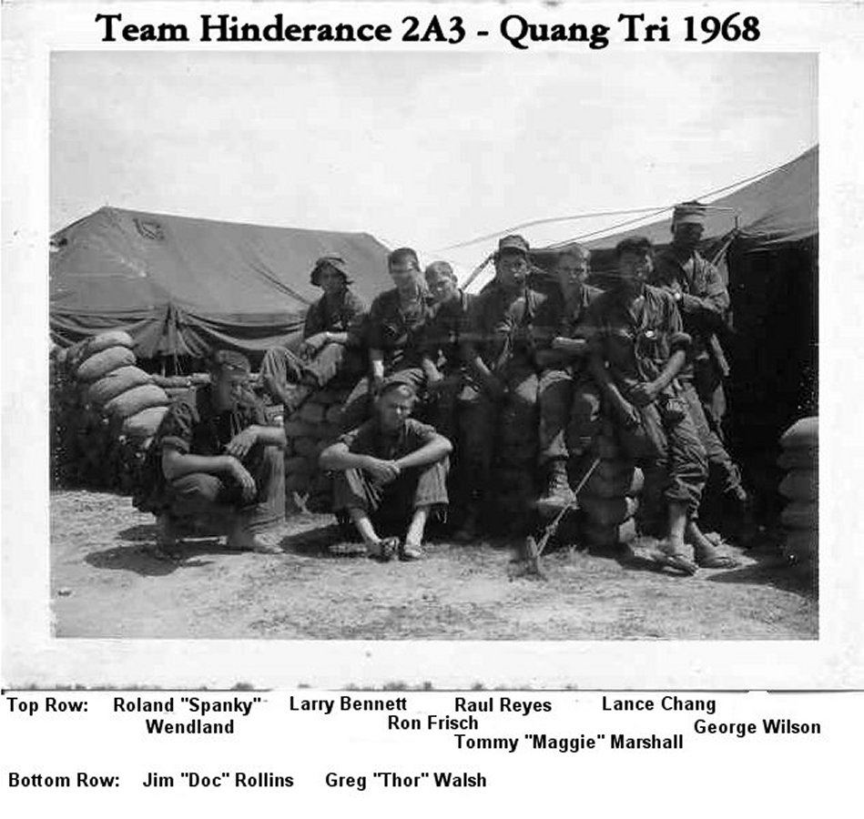
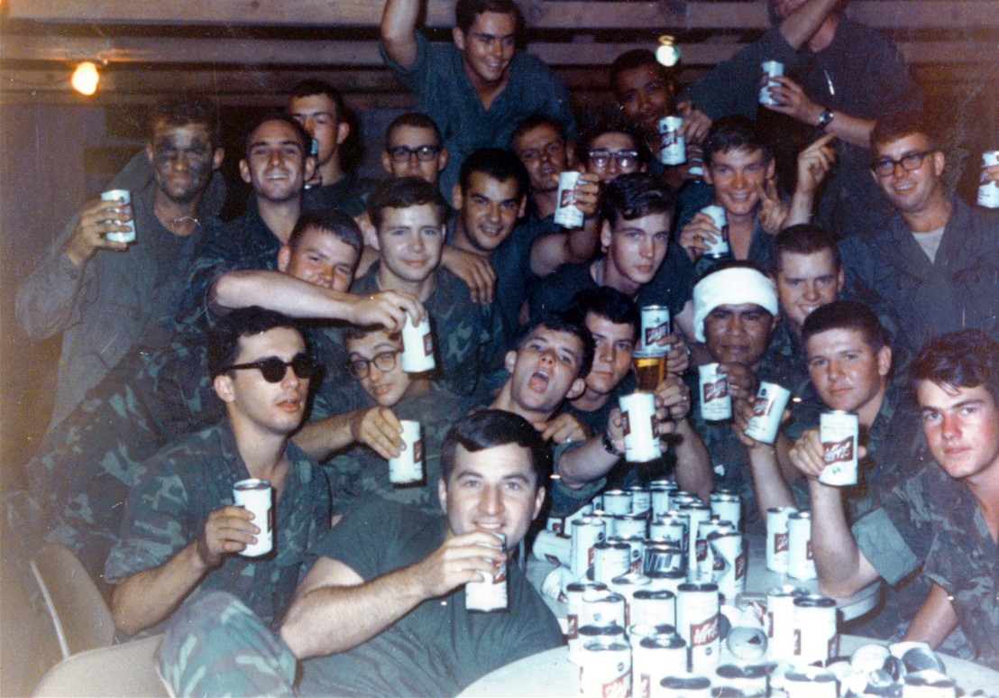
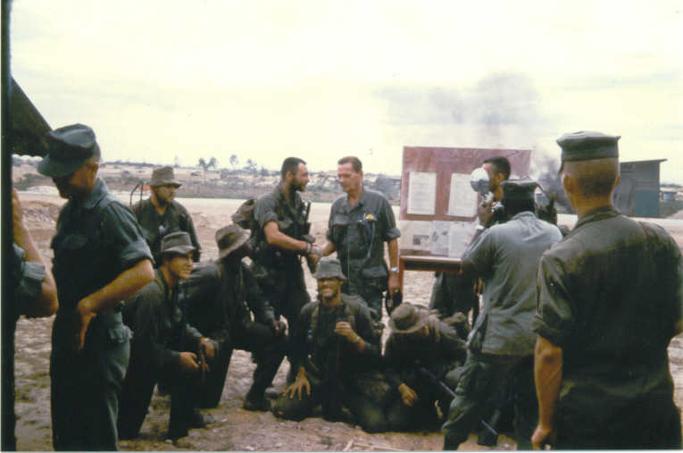

Alpha Company 3rd Recon Bn 1968
Updated 2.10.04.
1968
Click On Photo's for full size view
Paul "Doc" Tobin standing next to the Alpha Company Sign in Quang Tri. Paul was the artist that painted the sign. Photo sent in by Max O'Canas.

Recon Team Sandbox. Photo from Paul "Doc" Tobin. L-R Kneeling - Colleloure, Chalfant, Tobin, Miller : Standing L-R Hernandez, ??, Lopez, Threw

Dong Ha Ammo Dump Blowing up as a result of NVA Artillery Fire on 20 June 1968. Photo's courtesy of Andy Woll. Photo taken from Quang Tri.

Greg Walsh's photo of Team Hinderance.

Alpha 3rd Plt 1968The Following three photo's are from Rueben McGinnis Collection and have been provided by Tim McGinnis.
Team Fancy Dan June 1968
Standing L-R Doc?, Harold Chapman, Donald Fisher, Jim Hennenman, Robert Tharp
Knelling L-R James Carrigan, Michael Olsen, Manual Saldivar
Sitting Steven McDiarmid
Need Help With ID's

Need Help With ID'sHoochie Golf Tournament -September 2002